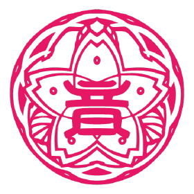

µ's

O grupo µ's é um grupo criado no colégio Otonokizaka, localizada entre os bairros de Akihabara, Kanda e Jinbouchou, em Tokyo.
Membras:
Kousaka Honoka (Líder/Fundadora)

- Aniversário: 3 de agosto
- Altura: 1,57
- Comida favorita: Morango
- Comida que não gosta: Pimentão
- Charme: Seu sorriso energético
A família de Honoka é dona de uma loja de doces japonesa chamada Homura. Ela mora nos fundos da loja com sua mãe, seu pai e sua irmã mais nova. Desde jovem, ela é amiga de Kotori, e fez amizade com Sonoda Umi após convidá-la para uma brincadeira de esconde-esconde. Ela também é amiga de Fumiko, Hideko e Mika na escola. Sua avó e sua mãe são ambas graduadas em Otonokizaka.
A dubladora japonesa chama-se Nitta Emi (新田恵海).
Sonoda Umi (Letrista・Coreógrafa)

- Aniversário: 15 de março
- Altura: 1,59
- Comida favorita: Manjuu da família Kousaka
- Comida que não gosta: Bebidas carbonatadas
- Charme: Seu longo cabelo preto desde infância
Desde que era jovem, Umi é amiga de infância de Honoka e Kotori, graças a Honoka a ter convidado para brincar de esconde-esconde. Ela também é membro do clube de arco e flecha da escola, no qual é muito boa. Ela acredita que Honoka é mandona e agressiva, mas também percebe as vantagens de ter uma amiga aventureira. Entre os membros das μ's, Umi assume o papel de ser sua treinadora física.
Umi tem uma irmã muito mais velha que já se mudou. Seu pai é um treinador de artes marciais enquanto sua mãe ensina dança tradicional japonesa; como resultado, espera-se que Umi herde o dojo combinado de ambos. Como herdeira do legado de sua linhagem, ela é sobrecarregada com a responsabilidade de continuar as práticas e técnicas tradicionais japonesas de sua família. Ela também é altamente habilidosa em kyuudou (弓道), ou a arte marcial japonesa de arco e flecha. Previsivelmente, a educação tradicional de Umi se reflete em sua personalidade e comportamento.
A dubladora japonesa chama-se Mimori Suzuko (三森すずこ)
Minami Kotori (Supervisora de roupas・Coreógrafa)

- Aniversário: 12 de setembro
- Altura: 1,59
- Comida favorita: Cheesecake
- Comida que não gosta: Alho
- Charme: Olhos suaves e caídos
Desde jovem, Kotori é amiga de Honoka e Umi. Sua mãe é a diretora da escola.
A dubladora japonesa chama-se Uchida Aya (内田彩).
Yazawa Nico (especialista em idols・Designer de roupas)

- Aniversário: 22 de julho
- Altura: 1,54
- Comida favorita: Doces
- Comida que não gosta: Comida apimentada
- Charme: Sua pele clara
No episódio 5 da 1ª temporada, é descoberto que durante seu primeiro ano do ensino médio ela começou um grupo de idols. No entanto, um por um os membros desistiram porque o padrão de Nico para idols era muito alto para eles e eles não conseguiam acompanhar.
No episódio 4 da 2ª temporada, é revelado que ela tem duas irmãs mais novas chamadas Cocoro e Cocoa, e um irmão mais novo, Cotaro. O pai de Nico está fora de cena, então sua mãe está constantemente fora de casa para trabalhar e suprir financeiramente as necessidades de seus quatro filhos. Por estar em uma casa monoparental, o dinheiro é curto e seu espaço de vida é compacto. Como a mãe de Nico quase nunca está em casa, Nico assumiu há muito tempo o papel de chefe (ou possivelmente única) cuidadora da casa. Nico é a mais velha pela maior diferença de idade, com seus três irmãos sendo todos muito mais novos que ela e mais próximos da idade uns dos outros. Por causa disso, Nico está acostumada e habilidosa em cozinhar e cuidar da casa. Mais importante, no entanto, ela parece se importar muito com seus irmãos mais novos e fará de tudo para fazê-los sorrir. Ela chegará ao ponto de mentir para fazê-los felizes. Isso é descoberto quando os irmãos de Nico expressam sua crença de que os outros membros são dançarinos de apoio de Nico, o que foi uma mentira que Nico contou a eles e substanciada com pôsteres alterados de μ's nos quais ela era o centro (trocados com Honoka). Desconhecendo a verdade, Cocoro, Cocoa e Cotaro agem felizes, orgulhosos e inspirados pela ideia do sucesso inigualável de sua irmã mais velha.
Todas essas informações são uma surpresa para os outros membros, pois vão contra seu comportamento frequentemente egocêntrico na escola e durante o trabalho de idol. No entanto, a revelação da vida doméstica de Nico fornece uma visão sobre o porquê dos traços de personalidade e valores específicos de Nico se desenvolverem e como eles informam seu comportamento dentro das μ's. Seu desejo descarado pelos holofotes e por ser mimada é um produto de não receber tanta atenção devido à sua situação doméstica. A obsessão de Nico em fazer os outros sorrirem com seu bordão ("Nico Nico Nii!" ou にっこにっこにー) está relacionada a quando Nico tentava o máximo para animar seus familiares durante as dificuldades.
A dubladora japonesa chama-se Tokui Sora (徳井青空).
Hoshizora Rin (Líder de prática)

- Aniversário: 1 de novembro
- Altura: 1,55
- Comida favorita: Ramen
- Comida que não gosta: Peixe
- Charme: Seu bumbum bonito e bem torneado
Rin é uma aluna do primeiro ano que é amiga de Hanayo desde que eram crianças. Ela é bem atlética e otimista. Ela é muito conhecida por ter um coração enorme para gatos e por agir como eles; ela tende a dizer nya~! (miau), seja como uma forma de terminar suas frases ou para mostrar sua felicidade. Além disso, ela às vezes age como um gato e faz o olhar característico de boca curvada.
Quando criança, Rin era frequentemente provocada por usar saias. Por causa disso, ela decidiu evitar usar saias e vestidos em público, exceto para seu uniforme. Essa insegurança é mais tarde o que contribui para sua incapacidade de se ver como adequada para uma idol da escola, embora ela realmente goste da ideia de ser um. Mesmo assim, ela mais tarde se junta à μ's na Temporada 1 Episódio 4 ao lado de Hanayo e sua colega de classe Maki, apoiando a primeira em seu esforço para se tornar um ídolo da escola.
A dubladora japonesa chama-se Iida Riho (飯田里穂).
Koizumi Hanayo (Provedor de informações)

- Aniversário: 17 de janeiro
- Altura: 1,57
- Comida favorita: Arroz branco
- Comida que não gosta: Nenhuma
- Charme: Suas bochechas macias
Desde crianças, Hanayo é a melhor amiga de Rin, que sempre disse que Hanayo queria ser uma idol como sua mãe costumava ser no passado. Ela mora com seu pai, mãe, avô e avó.
A dubladora japonesa chama-se Kubo Yurika (久保ユリカ).
Nishikino Maki (Compositor・Preparadora vocal)

- Aniversário: 19 de abril
- Altura: 1,60
- Comida favorita: Tomates
- Comida que não gosta: Mikan
- Charme: Sua beleza e inteligência transbordante
Maki vem de uma família rica e altamente respeitável, marcada por médicos e proprietários de hospitais. Ela é filha única e, portanto, a única herdeira das propriedades e legado de sua família. Por causa disso, Maki é mimada, mas não tem nenhuma liberdade de longo prazo para ser outra coisa senão médica. Maki respeita seus pais e não questiona suas expectativas, apesar da imensa pressão para viver de acordo com seus padrões e deixá-los orgulhosos.
Embora Maki tenha crescido cantando e praticando piano, a ênfase de seus pais na concentração médica de Maki a fez aceitar que ela finalmente deveria desistir de sua paixão pela música, o que se tornou uma realidade cada vez maior a cada ano que ela envelhecia. Ela sempre teve uma voz notavelmente bonita e era capaz de compor sua própria música com um piano. Apesar da música sempre ter sido sua verdadeira paixão, quando Honoka a convida para se juntar as µ's, Maki se recusa a princípio, de acordo com sua pressão autoinfligida para negar a si mesma a música em favor de seus estudos. No final das contas, ela é capaz de admitir e aceitar seus verdadeiros sentimentos de amor pela música e se juntar ao µ's.
Por causa da riqueza de Maki, é descoberto no episódio 10 da 1ª temporada que seus pais são donos de uma casa de praia. Portanto, μ's insistiu alegremente que Maki fosse perguntar aos pais se eles poderiam usá-la, o que eles permitiram. No episódio 2 da 2ª temporada, é revelado que sua família também é dona de uma casa de férias nas montanhas.
A dubladora japonesa chama-se Hori Eriko (Pile・堀 絵梨子).
Toujou Nozomi (Membro unificadora・Nomeadora)

- Aniversário: 9 de junho
- Altura: 1,59
- Comida favorita: Yakiniku
- Comida que não gosta: Caramelo
- Charme: Seu busto
Nozomi é uma aluna do terceiro ano e ex-vice-presidente do conselho estudantil da escola, sendo sucedida por Umi. Ela é originalmente da região de Kansai, e é mostrado no episódio 8 da 2ª temporada que ela e sua família se mudaram durante a maior parte de sua infância. No entanto, ela fala em um dialeto relaxado de Kansai depois de ter vivido lá por alguns anos durante sua infância. Ela é fluente em algumas outras línguas também, incluindo inglês. Ela é a melhor amiga de Ayase Eli.
No mangá, Nozomi não está no conselho estudantil; em vez disso, ela é o único membro restante na Supernatural Phenomenon Research Society, um clube para o qual ela tentou recrutar Eli. Além disso, ela cresceu em Akihabara e adotou seu dialeto para combinar com sua predileção pelo sobrenatural.
Desde o primeiro episódio, Nozomi mostrou seu apoio ao grupo de Honoka e seu sonho de serem idols de escola, ajudando-as a encontrar maneiras de contornar as ordens de Eli para que possam ter sucesso em seu sonho, embora ela os ajude diretamente também. Depois que Eli se junta às μ's na Temporada 1 Episódio 8, ela se junta ao grupo também, pois sempre quis fazer algo com quem ela considera seus amigos. Ela também é a pessoa por trás do nome das μ's; ela decidiu isso porque era a pronúncia de "Musa", que é como as nove deusas gregas e filhas de Zeus são conhecidas, e ela sabia que as nove garotas acabariam se unindo como elas.
A dubladora japonesa chama-se Kasuda Aina (楠田亜衣奈).
Ayase Eli (Coreógrafa)

- Aniversário: 21 de outubro
- Altura: 1,62
- Comida favorita: Chocolate
- Comida que não gosta: Ameixa em conserva, Nori
- Charme: Seu estilo afiado
Eli é parcialmente russa por parte de sua avó. Por causa disso, ela é conhecida por dizer a palavra russa "хорошо" (pronuncia-se "Harasho"), que significa "Bom" ou "Ok". Eli disse isso pela primeira vez na Temporada 1 Episódio 10 quando Umi foi acordada pela briga de travesseiros das meninas e ela jogou "travesseiros supersônicos" em sua raiva.
Ela tem uma irmã mais nova chamada Ayase Alisa. Ela disse a Umi que sua família mora no exterior desde que eram pequenos e ainda não se adaptaram ao estilo de vida no Japão. Sua avó também é ex-aluna da Otonokizaka, o que aumentou seu desejo de defender sua escola de ser fechada.
No episódio 7 da 1ª temporada, é mostrado que sua mãe e avó fizeram balé através do vislumbre das fotos em seu quarto, e é um legado passado para Eli, pois ela também era uma dançarina de balé quando era mais jovem. No entanto, é revelado mais tarde que Eli estava na verdade no final da lista no balé em comparação com os outros dançarinos e mal conseguia passar nas audições. Devido aos seus fracassos constantes, ela desistiu de seu sonho de se tornar uma dançarina de balé e gradualmente tentou fechar seu coração e se distanciar de seu sonho de brilhar e dançar novamente.
A dubladora japonesa chama-se Nanjou Yoshino (南條愛乃).
Confira algumas músicas delas~
Clique na imagem

Se quiser voltar à página inicial, clica ali, ó → Voltar